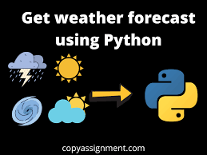

Done a mini on WEATHER FORECASTING APPLICATION USING PYTHON

The main objective of this is to create a single web application
using some python libraries like stream lit and matplot.
It helps us to understand the data in a visualized matter.
The main aim is to identify whether a particular patient is affected by CKD or not and it has to be
accurate and precise. So, for that we are going to purpose a correlate four preexisting Machine
Learning Algorithms to find the best among all. For this purpose, we gathered a
CKD data set from UCI machine learning repository and we examining the correlation between the
development of the CKD and predictors using a predictive approach of the
analysis. This will help us to reduce the number of required parameters to predict
the CKD disease occurrence as well as eliminating the missing, redundant and
noisy data. And we have to use certain features to measure its accuracy and
predictions.